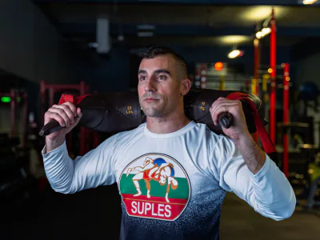

B1001 · Bulgarian Bag Online Program [UPDATES]
Hi {first_name},
I hope this message finds you well. I'm reaching out today to share some exciting updates about the upcoming 30-Day Bulgarian Bag Complete Online Program - Athleticism for Life.
Let me start by expressing my appreciation for being a forward-thinker who embraces unconventional approaches.
About a decade ago, I came across a YouTube video featuring Ivan Ivanov using the Bag, and I immediately recognized its unique qualities. The movement skills, creativity, and athleticism (especially with rotational movements) were exactly what I had been looking for.
However, finding comprehensive education on the subject proved to be a challenge at the time.
To address this gap, I made multiple trips to Suples HQ in Boise, Idaho, over the years and took certifications to learn directly from the creator.
Since then, I've been fortunate to share the Bulgarian Bag, Ivan's system, and my unique approach with people worldwide.
 Finally, the time has come to introduce a program for you! This marks the first Suples Approved Program, offering you the opportunity to learn the movements and techniques I've learned from Ivan, in addition to my own perspective and holistic training method.
This program goes beyond just Bulgarian Bag training. When pre-orders open this Friday, you'll see exactly what I mean.
As incredible as the Bulgarian Bag is, or even the Kettlebell, there are many other aspects of training that are crucial for harnessing athleticism throughout life. And what I love is sharing complete training methods and systems that deliver lasting results.
I'm thrilled and honored for you to elevate your performance, body, and overall training to new levels.
Stay tuned for more updates in the coming days. Here's what you can expect:
In the meantime, if you have any questions or want to order a bag to get ready, use code TEAMSALEMI10 on my site for a 10% discount (valid in the US).
Get ready to capture your pre-order opportunity this Friday! Best, Mike
P.S. For Black Friday through Cyber Monday, I will be offering 50% or more off on all my online programs (Kettlebell Lifestyle and Mastering the Kettlebell)! If you've wanted to take your physical training and fitness to new heights, this is a great time to hop on this opportunity...stay tuned. |